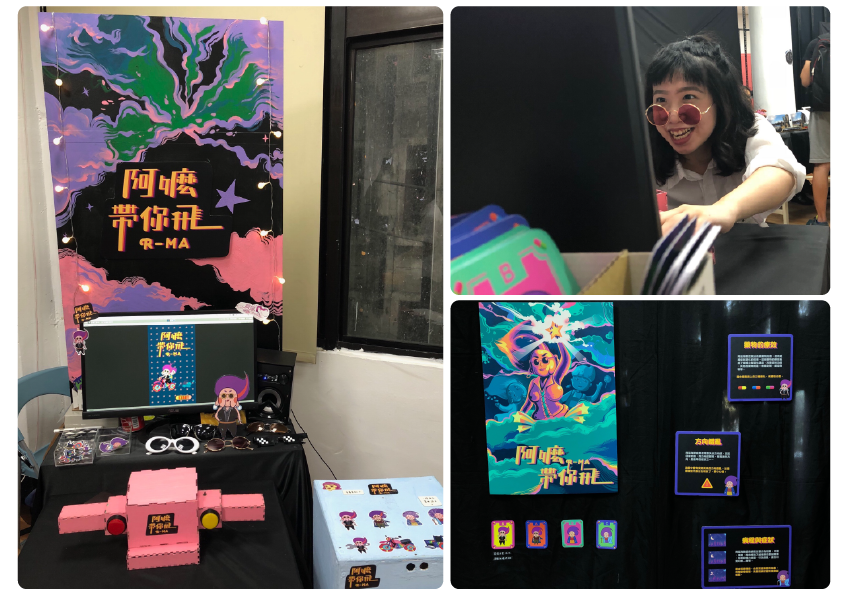
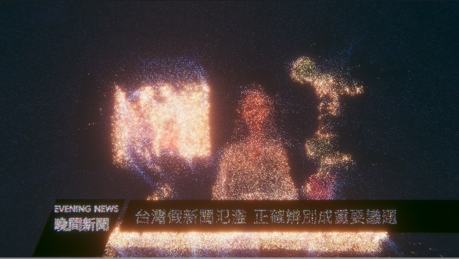
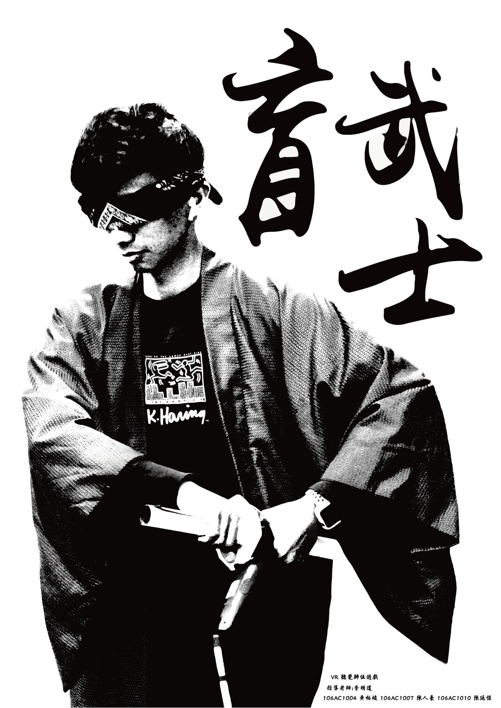
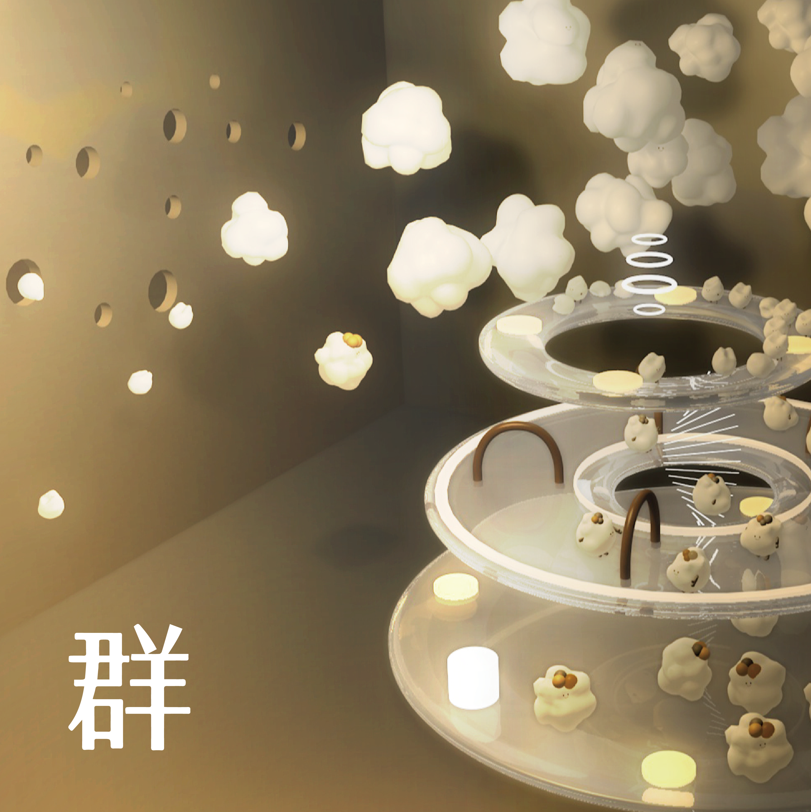

大一上期末專題 | HAPPY PILLS
主題:快樂
透過立體繪本，分享我們快樂的童年，結合具備互動性的電子元件，做出一本充滿驚喜與快樂的故事書。

大一下期末專題 | 阿嬤帶你飛
主題:時間與空間
將阿茲海默症患者所產生的時空錯覺，幻化成一場時空跳躍之旅，以阿茲海默症的病癥發想，做一款互動式的賽車遊戲，面對著已經逃不了的事情不如換個方式面對，翻轉人們對阿茲海默症悲觀的想像。

大二下期末專題 | Shape Of Sound
利用重量偵測的方式象徵接收資訊的多寡，即時運算利用深度相機所拍攝一則新聞播報及採訪的影片，裝置上的物品也代表媒體道德或是不同立場的新聞媒體，希望觀眾體驗完後能反思及提升自己的媒體素養。

畢業製做專題 | 盲武士
一款沒有視覺的VR遊戲，應用VR追蹤的技術，固定音效的方位，讓玩家透過聽音辨位的方式擊殺敵人， 贏得勝利。

畢業製做專題 | 群
#互動裝置 #現象觀察 #虛實連結思考
以箱子做為媒介的互動模式，藉互動過程影響虛擬世界中的環境，反思外在影響，個體與群之間的關係。